정보처리산업기사 (2009-05-10 기출문제)
1과목: 데이터 베이스
1. 하나의 릴레이션에 존재하는 후보 키들 중에서 기본키를 제회한 나머지 후보 키들을 무엇이라고 하는가?
- Foreign Key
- Alternative Key
- Super Key
- Spare Key
(정답률: 61%)

2. 시스템 카탈로그에 대한 설명으로 옳지 않은 것은?
- 시스템 자신이 필요로 하는 스키마 및 여러 가지 객체에 관한 정보를 포함하고 있는 시스템 데이터베이스이다.
- 시스템 카탈로그에 저장되는 내용을 메타데이터라고 한다.
- 데이터 사전이라고도 한다.
- 일반 사용자는 시스템 테이블의 내용을 검색할 수 없다.
(정답률: 80%)
3. 순차 파일에 대한 설명으로 옳지 않은 것은?
- 레코드들이 순차적으로 처리되므로 대화식 처리 보다 일괄처리에 적합하다.
- 연속적인 레코드의 저장에 의해 레코드 사이에 빈 공간이 존재하지 않으므로 기억 장치의 효율적인 이용이 가능하다.
- 매체 변환이 쉬워 어떠한 매체에도 적용할 수 있다.
- 필요한 레코드를 삽입, 삭제, 수정하는 경우 파일을 재구성 할 필요가 없으므로 파일 전체를 복사하지 않아도 된다.
(정답률: 70%)
4. 제 1 정규형에서 제 2 정규형 수행시의 작업으로 옳은 것은?
- 이행적 함수 종속성 제거
- 다치 종속 제거
- 모든 결정자가 후보키가 되도록 분해
- 부분 함수 종속성 제거
(정답률: 71%)
5. 관계 데이터 모델에서 릴레이션에 대한 설명으로 옳지 않은 것은?
- 각 속성은 릴레이션 내에서 유일한 이름을 가진다.
- 한 릴레이션 내에서 속성의 순서는 큰 의미가 없다.
- 튜플은 무순서로 릴레이션에 입력된다.
- 모든 속성 값은 원자 값으로 될 수 없다.
(정답률: 74%)
6. This is defines as golding true in a relation, R, if and only if every determinant in R is a candidate key. What is this?
- 1NF
- 2NF
- 3NF
- BCNF
(정답률: 50%)
7. P. Chen 이 제안한 것으로 현실 세계에 존재하는 객체들과 그들 간의 관계를 사람이 이해하기 쉽게 표현하는 모델은?
- 개체-관계(E-R) 모델
- 관계 데이터 모델
- 네트워크 데이터 모델
- 계층 데이터 모델
(정답률: 78%)
8. 이진탐색(Binary Search)을 하고자 할 때 구비조건으로 가장 중요한 것은?
- 자료가 순차적으로 정렬되어 있어야 한다.
- 자료의 개수가 항상 짝수이어야 한다.
- 자료의 개수가 항상 홀수 이어야 한다.
- 자료가 모두 정수로만 구성되어야 한다.
(정답률: 71%)
9. 관계대수의 조인 연산에서 결과가 동일한 애트리뷰트는 하나만 나타내는 연산을 무엇이라고 하는가?
- 택일 조인
- 자연 조인
- 완전 조인
- 2차 조인
(정답률: 52%)
10. 학생(STUDENT) 테이블에 컴퓨터정보과 학생 120명, 인터넷정보과 학생 160명, 사무자동화과 학생 80명에 관한 데이터가 있다고 했을 때, 다음에 주어지는 SQL문 (ㄱ), (ㄴ), (ㄷ)을 각각 실행하면, 결과 튜플 수는 각각 몇 개인가?(단, DEPT는 학과 컬럼명임)
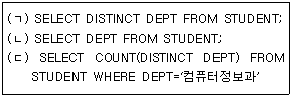
- (ㄱ) 3, (ㄴ) 360, (ㄷ) 1
- (ㄱ) 360, (ㄴ) 3, (ㄷ) 120
- (ㄱ) 3, (ㄴ) 360, (ㄷ) 120
- (ㄱ) 360, (ㄴ) 3, (ㄷ) 1
(정답률: 54%)
11. 개체-관계(E-R) 모델을 데이터베이스로 변환한 다음 데이터 모델에서 나타날 수 있는 이상 현상들을 제거하기 위한 과정을 무엇이라고 하는가?
- 모델링
- 구조화
- 정규화
- 개념화
(정답률: 74%)
12. 데이터베이스 관리자(Database Administrator)의 역할에 대한 설명으로 거리가 먼것은?
- 데이터베이스 물리적 저장 구조와 접근 권한을 결정한다.
- 최초의 데이터베이스 스키마를 생성하고, 이는 데이터 사전에 테이블 집합으로 영구 저장된다.
- 정보 보안 검사와 무결성 제약 조건을 지정한다.
- 주로 DML을 이용하여 사용자가 요구한 응용 프로그램을 작성 한다.
(정답률: 56%)
13. 관계형 데이터베이스의 릴레이션에서 속성에 대한 설명으로 옳지 않은 것은?
- 속성의 수를 Cardinality 라고 한다
- 데이터베이스를 구성하는 가장 작은 논리적 단위이다.
- 파일 구조상 데이터 항목 또는 데이터 필드에 해당된다.
- 속성은 개체의 특성을 기술한다.
(정답률: 65%)
14. 뷰의 삭제시 사용하는 SQL 명령으로 옳은 것은?
- DROP VIEW ~
- DELETE VIEW ~
- KILL VIEW ~
- ERASE VIEW ~
(정답률: 78%)
15. 서브루틴에서 복귀 번지 저장시 가장 적합한 자료 구조는?
- 스택
- 큐
- 데크
- 단일 환상 리스트
(정답률: 67%)
16. 다음 자료에 대하셔 버블 정렬을 사용하여 오름차순으로 정렬 하고자 할 경우 1회전 후의 결과로 옳은 것은?
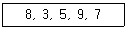
- 3, 8, 5, 9, 7
- 3, 5, 9, 7, 8
- 7, 9, 5, 3, 8
- 3, 5, 8, 7, 9
(정답률: 64%)
17. Infix 표기법으로 표현된 산술식 “A/B-(C*D)/E"를 Postfix 표기법으로 옳게 나타낸 것은?
- AB/CD*E/-
- AB/-CD*E/
- -/AB/*CDE
- A/B-C*D/E
(정답률: 57%)
18. 정보처리 시스템을 지원하는 데이터베이스 개념이 생긴 이유로 옳지 않은 것은?
- 여러 응용에 사용되는 데이터의 체계화를 통하여 경영 및 조직 운영의 효율화에 목적이 있다.
- 데이터 내용의 일관성을 유지하는데 목적이 있다.
- 물리적인 저장장치와 데이터의 독립성을 유지한다.
- 여러 사용자와의 공유할 필요성 때문에 자료의 중복을 허용하는데 목적이 있다.
(정답률: 72%)
19. 다음 영문의 괄호 안 내용으로 가장 적합한 것은?
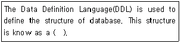
- Domain
- Class
- Schema
- Cardinality
(정답률: 72%)
20. 데이터베이스 설계 단계 중 물리적 설계에 대한 설명으로 옳지 않은 것은?
- 개념적 설계단계에서 만들어진 정보 구조로부터 특정 목표 DBMS가 처리할 수 있는 스키마를 생성한다.
- 다양한 데이터베이스 응용에 대해서 처리 성능을 얻기 위해 데이터베이스 파일의 저장 구조 및 엑세스 경로를 결정한다.
- 물리적 저장장치에 저장할 수 있는 물리적 구조의 데이터로 변환하는 과정이다.
- 물리적 설계에서 옵션 선택시 응답시간, 저장 공간의 효율화, 트랜잭션 처리율 들을 고려하여야 한다.
(정답률: 57%)
2과목: 전자 계산기 구조
21. 인터럽트 발생시 수행 되어야 할 사항이 아닌 것은?
- Program Counter의 내용을 보관
- 인터럽트 처리 루틴의 수행
- 수행 중인 Program의 보관
- 인터럽트가 발생된 장치를 추적
(정답률: 34%)
22. 마이크로 오퍼레이션 수행에 필요한 시간을 무엇이라 하는가?
- 마이크로 사이클 타임
- 엑세스 타임
- 서치 타임
- 클록 타임
(정답률: 65%)
23. 다음 중 데이터 레지스터에 속하지 않은 것은?
- Stack
- Accumulator
- Program Counter
- General Purpose Register
(정답률: 40%)
24. 다음과 같이 산술식으로 표현된 명령을 누산기를 이용하는 1-주소 명령으로 옳게 표현한 것은?
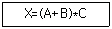
- LOAD A
ADD B
MUL C
STORE X - LOAD B
MUL C
ADD A
STORE X - ADD A
LOAD B
MUL C
STORE X - ADD A, B
MUL C
STORE X
(정답률: 59%)
25. 복수 모듈기억장치 처리시 주소가 완전히 인터리브 될 때의 특징은?
- 처리속도의 감소
- 처리속도의 증가
- 인터럽트의 감소
- 보조기억장치의 효율성
(정답률: 50%)
26. 컴퓨터 주기억장치의용량이 128MB이면 Address Bus는 몇 비트가 필요한가?
- 24
- 25
- 26
- 27
(정답률: 41%)
27. EBCDIC 코드에 의한 (-123)(10진수)의 팩 10진수 형식은?
- F1F2D3
- F1F2C3
- 123D
- 123C
(정답률: 44%)
28. 다음은 제어장치의 구성 요소 중 어떤 장치를 설명한 것인가?
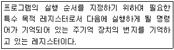
- 명령어 레지스터(IR : Instruction Register)
- 프로그램 카운터(PC : Program Counter)
- 명령 해독기(ID : Instruction Decoder)
- 상태 레지스터(PSW : Program Status Word)
(정답률: 62%)
29. 고정 소수점(Fixed Point Number) 표현 방식이 아닌 것은?
- 1의 보수에 의한 표현
- 2의 보수에 의한 표현
- 9의 보수에 의한 표현
- 부호화 절대값에 의한 표현
(정답률: 64%)
30. 8bit Register의 데이터가 00101001 일 때 이 데이터를 4배 증가 시키려고 할 때 취하는 연산 명령은?
- Shift Left 4회
- Shift Left 2회
- Shift Right 4회
- Shitf Right 2회
(정답률: 61%)
31. 한글 2바이트 조합형 코드에서 한글과 영문을 구분하기 위한 비트 수는?
- 1비트
- 2비트
- 3비트
- 4비트
(정답률: 55%)
32. 마이크로 사이클 중 동기 고정식에 비교하여 동기 가변식에 관한 설명으로 옳지 않은 것은?
- CPU의 시간을 효율적으로 이용
- 마이클 오퍼레이션 수행 시간의 차이가 클 경우 사용
- 마이크로 오퍼레이션의 수행 시간이 유사한 경우 사용
- 그룹화된 각 마이크로 오퍼레시션들에 대하여 서로 다른 사이클을 정의
(정답률: 55%)
33. 프로그램이 수행되려면 주소와 기억장치를 결부시켜야 하는데 무엇이라 하는가?
- 주소공간
- 사상함수
- 기억공간
- 연산함수
(정답률: 45%)
34. 입출력 장치와 주기억장치 사이의 데이터 전송을 담당하는 입출력 전담 장치는?
- 콘솔 장치
- 터미널 장치
- 상태 레지스터 장치
- 채널 장치
(정답률: 62%)
35. 다음 중 어떤 명령(Instruction)이 수행되기 위해 가장 우선적으로 이루어져야 하는 마이크로 오퍼레이션은?
- MBR ← PC
- PC ← PC + 1
- IR ← MBR
- MAR ← PC
(정답률: 51%)
36. 다음 중 입출력 제어방식에 해당하지 않는 것은?
- CPU에 의한 방식
- DMA 방식
- Buffer에 의한 방식
- 채널 제어기에 의한 방식
(정답률: 39%)
37. 다음과 같은 게이트로 이루어진 조합논리 회로는?
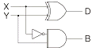
- 반가산기
- 반감산기
- RS 플리플롭
- 디코더
(정답률: 44%)
38. RAM(Random Access Memory)의 특징으로 가장 옳은 것은?
- 데이터 입출력의 고속 처리
- 데이터 입출력의 순서적 처리
- 데이터 입출력의 내용 기반 처리
- 데이터 기억공간의 확장 처리
(정답률: 59%)
39. 프로그램 카운턴(PC)의 값과 명령어의 주소 부분이 더해져서 유효 주소를 결정하는 주소지정 방식에서 필요한 주소는?
- 완전주소
- 약식주소
- 절대주소
- 상대주소
(정답률: 57%)
40. 다음 수들 중에서 가장 큰 값은?
- 2진수 : 1011101
- 8진수 : 157
- 10진수 : 165
- 16진수 : B7
(정답률: 55%)
3과목: 시스템분석설계
41. HIPO에 대한 설명으로 옳지 않은 것은?
- 입력, 처리, 출력 관계를 시각적으로 기술한다.
- 체계적인 문서 작성이 가능하며, 보기 쉽고 알기 쉽다.
- 기능과 자료
- 유지보수 및 변경이 용이하며, 상향식 방식을 사용하여 나타낸다.
(정답률: 57%)
42. 코드 설계시 유의사항으로 옳지 않은 것은?
- 공통성과 체계성을 확보하여 분류의 편리성을 도모한다.
- 대상 자료와 1:N 대응되도록 설계하여 복합성을 확보해야 한다.
- 확장하기 쉽도록 설계하여 확장성을 도모한다.
- 컴퓨터 처리에 적합한 기계 처리의 용이성을 확보해야 한다.
(정답률: 61%)
43. 트랜잭션 파일(Transaction File)을 사용하여 마스터 파일(Master File) 안의 정보를 최신의 상태로 유지하도록 해주는 파일 처리의 유형은?
- Update
- Sort
- Merge
- Extract
(정답률: 76%)
44. 객체에 대한 설명으로 옳지 않은 것은?
- 객체는 실세계 또는 개념적으로 존재하는 세계의 사물들이다.
- 객체는 공통적인 특징을 갖는 클래스들을 모아둔 것이다.
- 객체는 데이터를 가지면 이 데이터의 값을 변경하는 함수를 가지고 있는 경우도 있다.
- 객체들 사이의 통신을 할 때는 메시지를 전송한다.
(정답률: 43%)
45. 자료 흐름도의 구성 요소 중 대상 시스템의 외부에 존재하는 사람이나 조직체를 나타낸 것은 무엇인가?
- Process
- Data Flow
- Data Store
- Terminator
(정답률: 54%)
46. 정해진 규정이나 한계, 또는 퀘도로부터 벗어나는 상태나 현상을 미리 감지하여 바르게 진행되도록 하는 시스템의 특성은 무엇인가?
- 목적성
- 자동성
- 종합성
- 제어성
(정답률: 60%)
47. 시스템 평가 방법 중 소프트웨어 비용 산출 방법이 아닌 것은?
- LOC 방법
- COCOMO 방법
- CPM 방법
- 델파이 방법
(정답률: 42%)
48. 문서화의 효과에 대한 설명으로 거리가 먼것은?
- 소프트웨어 개발관리를 효과적으로 할 수 있다.
- 타 업무 개발시 참고할 수 있다.
- 개발 후에 유지 보수 작업이 용이하다.
- 에러 발생 시 귀책사유를 명확히 할수 있다.
(정답률: 69%)
49. 시스템의 기본 요소 중 처리된 결과가 정확하지 않으면 결과의 일부나 오차를 다음 단계에 다시 입력하여 한 번 더 처리하는 것을 무엇이라고 하는가?
- Control
- Process
- Feedback
- Input
(정답률: 72%)
50. 코드 설계 절차의 순서가 옳은 것은?
- 코드 대상 항목 결정→코드화 목적 설정→사용기간의 결정→사용범위의 결정→코드 대상의 특성 분석→코드화 방식 결정→코드의 문서화
- 코드 대상 항목 결정→코드화 목적 설정→사용범위의 결정→사용기간의 결정→코드 대상의 특성 분석→코드화 방식 결정→코드의 문서화
- 코드 대상 항목 결정→코드화 목적 설정→코드 대상의 특성 분석→사용범위의 결정→사용기간의 결정→코드화 방식 결정→코드의 문서화
- 코드 대상 항목 결정→코드화 목적 설정→코드 대상의 특성 분석→코드화 방식 결정→사용범위의 결정→사용기간의 결정→코드의 문서화
(정답률: 46%)
51. 출력정보의 내용 설계 시 고려사항으로 거리가 먼 것은?
- 출력 항목의 문자 표현 방법 결정
- 출력 항목에 대한 집계 방법 결정
- 출력 형식 결정
- 출력 정보의 오류검사 방법 결정
(정답률: 37%)
52. 프로세스 설계시 유의사항으로 옳지 않은 것은?
- 모든 사람이 이해할 수 있도록 표준화 한다.
- 처리 과정을 간결하고 명확히 표현한다.
- 가급적 분류 처리를 많게 한다.
- 시스템 상태, 구성 요소, 기능 등을 종합적으로 표시한다.
(정답률: 71%)
53. 입력 설계 단계 중 입력정보 매체화 설계 시 고려사항이 아닌 것은?
- 매체화 담당자 및 장소
- 레코드 길이 및 형식
- 입력 항목의 배열 순서 및 항목명
- 매체화시의 오류 체크 방법
(정답률: 34%)
54. 코드화 대상 항목을 특정 기준에 따라 대분류, 중분류, 소분류 등으로 구분하여 각 그룹 내에서 순차 번호를 부여하는 코드의 종류는 무엇인가?
- Sequence Code
- Block Code
- Group Classification Code
- Significant Digit Code
(정답률: 58%)
55. 프로토타입 모델의 순차적 과정 순서가 옳은 것은?
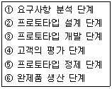
- ①-②-③-④-⑤-⑥
- ①-③-②-⑤-④-⑥
- ②-①-③-④-⑤-⑥
- ①-③-②-④-⑤-⑥
(정답률: 62%)
56. 오류 검사 종류 중 대차대조표에서 대변과 차변의 합계를 비교, 체크하는 것과 같이 입력 정보의 여러 데이터가 특정 항목 합계 값과 같다는 사실을 알고 있을 때 컴퓨터를 이용해서 계산한 결과와 분명히 같은지를 체크하는 방법은?
- Numeric Check
- Limit Check
- Format Check
- Balance Check
(정답률: 63%)
57. 해싱 함수에 의한 주소 계산 기법에서 서로 다른 키 값에 의해 동일한 주소 공간을 점유하는 현상을 무엇이라고 하는가?
- Synonym
- Changing
- Collision
- Bucket
(정답률: 47%)
58. 한 블록 내에 존재하는 논리 레코드의 수를 나타내는 용어는?
- Physical Record
- IRG(Inter Record Gap)
- IBG(Inter Block Gap)
- Block Factor
(정답률: 29%)
59. 파일 설계 순서로 옳은 것은?
- 파일 작성 목적 확인→파일 매체 검토→파일 특성 조사→파일 항목 검토→파일 편성법 검토
- 파일 작성 목적 확인→파일 매체 검토→파일 항목 검토→파일 특성 조사→파일 편성법 검토
- 파일 작성 목적 확인→파일 항목 검토→파일 매체 검토→파일 특성 조사→파일 편성법 검토
- 파일 작성 목적 확인→파일 항목 검토→파일 특성 조사→파일 매체 검토→파일 편성법 검토
(정답률: 44%)
60. 다음의 출력설계 단계 중 제일 먼저 설계해야 하는 것은?
- 출력 정보의 분배에 관한 설계
- 출력 정보의 내용에 관한 설계
- 출력 정보의 매체에 관한 설계
- 출력 정보의 이용에 관한 설계
(정답률: 57%)
4과목: 운영체제
61. 디스크 스케줄링 기법 중 탐색 거리가 가장 짧은 요청이 먼저 서비스를 받는 기법을 무엇이라고 하는가?
- FCFS 스케쥴링
- SSTF 스케쥴링
- SCAN 스케쥴링
- C-SCAN 스케쥴링
(정답률: 61%)
62. 다음의 작업 중 운영체제가 CPU 스케줄링 기법으로 HRN 방식을 구현했을 때 가장 먼저 처리되는 작업은?
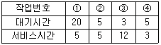
- ①
- ②
- ③
- ④
(정답률: 60%)
63. 라운드로빈(Round-Robin) 방식으로 다수의 사용자가 사용하는 시스템에서 컴퓨터가 사용자들의 프로그램을 번갈아 처리해 줌으로써 각 사용자들에게 독립된 컴퓨터를 사용하는 느낌을 주는 시스템은 무엇인가?
- 일괄처리 시스템
- 다중처리모드 시스템
- 시분할 시스템
- 실시간처리 시스템
(정답률: 65%)
64. UNIX 시스템에서 전체 파일 시스템에 대한 종합적인 정보를 저장하고 있는 블록은?
- 부트 블록
- 슈퍼 블록
- 데이터 블록
- I-node 블록
(정답률: 52%)
65. 다음 그림과 같이 메모리가 남이 있을 때 20KB의 작업을 최적적합(Best-Fit) 방식으로 할당할 경우 배치되는 영역 번호는?
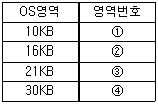
- ①
- ②
- ③
- ④
(정답률: 70%)
66. 교착상태의 예방기법 중 자원에 고유 번호를 할당하여 각 프로세스는 현재 점유한 자원의 고유번호보다 앞이나 뒤 어느 한쪽방향으로만 자원을 요구하도록 하는 것과 관계되는 것은?
- Mutual Exclusion 부정
- Hold and Wait 부정
- Non-Preemption 부정
- Circular Wait 부정
(정답률: 37%)
67. 파일 시스템이 디렉토리 트리구조로 조직되어 있을 때, 파일명을 명시하기 위한 방법으로 절대경로명과 상대경로명을 부여하는 방법이 있다. UNIX 시스템에서 상대 경로명에 해당하는 것은?
- /user/ast/mailbox
- /user/lib/dictionary
- ./lib/dictionary
- /etc/password
(정답률: 49%)
68. 강 결합 시스템(Tightly Couples System)의 특징에 해당하는 것은?
- 프로세서간의 통신은 공유 메모리로 이루어 진다.
- 각 시스템은 자신의 운영체제를 가진다.
- 각 시스템은 자신의 주기억장치를 가진다.
- 각 시스템간의 통신은 메시지 교환으로 이루어 진다.
(정답률: 54%)
69. 페이지 교체 시간이 프로세스의 처리 시간보다 더 길어지는 현상을 의미하는 것은?
- Pre-Paging
- Compaction
- Swapping
- Thrashing
(정답률: 65%)
70. CPU 스케줄링에서 선점(Preemptive)과 비선점(Non-Preemptive) 스케줄링에 대한 설명으로 옳은 것은?
- 선점 스케줄링은 CPU가 어떤 프로세스 실행을 시작하여 그 프로세스가 종료될 때까지 다른 프로레스를 실행할 수 없도록 한 스케줄링이다.
- 비선점 스케줄링은 CPU가 어떤 프로세스 실행 중에 다른 프로세스가 CPU를 요구하면 실행중인 프로세스를 중단하고 요구한 프로세스가 실행될 수 있도록 설계한 스케줄링 이다.
- 비선점 스케줄링은 온-라인 응용과 일괄처리 응용 모두에 적합한 스케줄링이다.
- 선점 스케줄링은 온-라인 응용에 적합한 스케줄링 이다.
(정답률: 45%)
71. 연산 P, V와 정수 변수를 이용하여 동기화 문제를 해결하는 것은?
- 세마포어
- 임계구역
- 상호배제
- 모니터
(정답률: 59%)
72. 스풀링(Spooling)에 대한 설명으로 옳지 않은 것은?
- CPU와 입출력장치를 아주 높은 효율로 작업할수 있도록 하는 다중프로그래밍의 운영 방식이라고 볼 수 있다.
- 많은 작업의 입출력과 계산을 중복하여 수행할 수 있다.
- 용량이 크고 바른 디스크를 이용하여 각 사용자의 입출력을 효과적으로 처리하는 기법이다.
- 입출력이 일어나는 동안 그데이터를 주기억장치에 저장하여 처리한다.
(정답률: 39%)
73. 4개의 페이지 프레임이 고정 할당되어 있고 초기에 4개의 페이지 프레임들이 모두 비어있다고 가정하였을 때 FIFO 페이지 교체 정책을 사용하면 다음 참조 스트링을 처리하는 동안 페이지 부재가 몇 회 발생하는가?
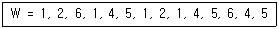
- 8
- 9
- 10
- 11
(정답률: 40%)
74. 생성된 프로세스가 자신을 생성한 프로세스의 텍스트와 데이터 영역을 그대로 공유하고스택만 따로 갖는 새로운 프로세스 모델로서 메모리 낭비절감 효과와 빠른 응답시간의 장점을 가지는 개념은?
- Fork
- Pipe
- Socket
- Thread
(정답률: 52%)
75. 그래프 탐색 알고리즘이 간단하며 원하는 파일로 접근이 쉬우며, 파일의 제거를 위하여 쓰레기 모음(Garbage-Collection)을 위한 참조 계수기가 필요한 디렉토리 구조는?
- 1단계 디렉토리
- 2단계 디렉토리
- 일반 그래프 디렉토리
- 비순환 그래프 디렉토리
(정답률: 35%)
76. UNIX 시스템 구성 요소 중 시스템과 사용자간의 인터페이스를 담당하고 사용자 명령을 인식하여 프로그램을 호출하고 명령을 수행하는 명령어 해석기를 무엇이라고 하는가?
- 유틸리티 프로그램
- 쉘(shell)
- 커널(Kernel)
- 파이프(Pipe)
(정답률: 63%)
77. 프로세스(Process)를 가장 바르게 정의한 것은?
- 프로그래머가 작성한 원시 프로그램이다.
- 컴파일러에 의해 번역된 기계어 프로그램이다.
- 컴퓨터에 의해 시행중인 프로그램으로 운영체제가 관리하는 최소 단위의 작업이다.
- 응용프로그램과 시스템프로그램 모두를 일컫는 용어이다.
(정답률: 62%)
78. 다음과 같은 CPU 버스트(Burst) 시간을 가진 프로세스들의 집합이 있다. FCFS 스케줄링 알고리즘을 이용했을 때 평균대기시간(Average Waiting Time) 가장 적게 걸리는 것은 어느 순서로 작업을 시행하였을 때인가?
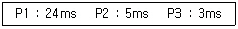
- P1 → P2 → P3
- P3 → P2 → P1
- P2 → P3 → P1
- P1 → P3 → P2
(정답률: 60%)
79. 분산 처리 시스템의 네트워크 위상(Topology)에 따른 분류 중 다음 설명에 해당하는 구조는?
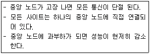
- Hierarchy connection
- Star connection
- Ring connection
- Multiaccess bus connection
(정답률: 65%)
80. "Working Set"의 설명으로 옳은 것은?
- 단위 시간 동안 처리된 작업의 집합
- 하나의 일(Job)을 구성하는 페이지의 집합
- 오류 테이터가 포함되어 있는 페이지의 집합
- 하나의 프로세스가 자주 참조하는 페이지의 집합
(정답률: 59%)
5과목: 정보통신개론
81. 다음 중 OSI 네트워크 계층화의 구성요소에서 서비스 프리미티브(Primitive)에 해당하는 것은?
- 요구, 지시, 응답, 확인
- 접속, 요구, 확인, 응답
- 요구, 접속, 해제, 전송
- 접속, 확인, 응답, 해제
(정답률: 45%)
82. 다음 중 데이터 회선종단장치 또는 이와 관련 없는 것은?
- DEC
- DTE
- MODEM
- DSU
(정답률: 33%)
83. 다음 중 정보 전송시 오류 검출 방법이 아닌 것은?
- 블록 합 검사(Block Sum Check)
- 순환 잉여 검사(Cyclic Redundancy Check)
- 프레임 검사(Frame Check)
- 패리티 비트 검사(Parity Bit Check)
(정답률: 50%)
84. 9600[bps]의 비트열(bit stream)을 8진 PSK로 변조하여 전송하면 변조 속도는?
- 1200[baud]
- 3200[baud]
- 9600[baud]
- 76800[baud]
(정답률: 51%)
85. 펄스코드변조 방식(PCM)의 송신측 변조과정은?
- 입력신호→부호화→양자화→표본화
- 입력신호→양자화→표본화→부호화
- 입력신호→표준화→양자화→부호화
- 입력신호→부호화→표본화→양자화
(정답률: 65%)
86. 다음 중 선로의 접점 불량, 기계적 진동 등에 의해서 순간적으로 발생되는 잡음은?
- Shot noise
- Impulse noise
- Thermal noise
- Jitter noise
(정답률: 42%)
87. 다음 중 나이퀴스트(Nyquist) Sampling Theorem과 관련 있는 것은?
- 표본화
- 양자화
- 부호화
- 복호화
(정답률: 56%)
88. 다음 중 연속적 ARQ에 해당하는 것은?
- Stop and Wait ARQ
- Go-back-N ARQ
- Adaptive ARQ
- CRC ARQ
(정답률: 47%)
89. 다음 중 OSI-7 참조 모델의 계층에 해당되지 않는 것은?
- 네트워크 계층
- 물리 계층
- 프레임 계층
- 세션 계층
(정답률: 72%)
90. 다음 중 멀티미디어의 표준화에 해당되지 않는 것은?
- JPEG
- MPEG
- MHS
- MHEG
(정답률: 52%)
91. 다음 중 교환방식에 관한 설명으로 틀린 것은?
- 회선교환방식은 회선에 융통성이 요구되거나 메시지가 짧은 경우에 적합하다.
- 데이터그램 패킷교환방식은 부하가 적거나 간헐적인 통신의 경우에 적합하다.
- 패킷교환방식은 코드 및 속도 변환이 가능하다.
- 가상회선 패킷교환방식은 패킷 도착순서가 고정적이다.
(정답률: 31%)
92. 데이터 통신 서비스의 지역 범위에 따라 구분되는 통신망의 종류가 아닌 것은?
- LAN
- WAN
- VAN
- MAN
(정답률: 50%)
93. 다음 중 ISDN에서 고속의 사용자 정보 전송을 위한 채널로 384[kbps]의 전송 속도를 갖는 것은?
- B channel
- D channel
- Ho channel
- H12 channel
(정답률: 36%)
94. 다음 중 광섬유 케이블의 설명으로 틀린 것은?
- 동축 케이블보다 더 넓은 대역폭을 지원한다.
- 전송속도가 UTP 케이블보다 빠르다.
- 전자기적 잡음에 약하다.
- 동축 케이블에 비해 전송손실이 적다
(정답률: 65%)
95. 다음 중 데이터전송에서 ITU-T에서 권고하는 X 시리즈란?
- 동화상 압축을 위한 프로토콜
- PSTN을 이용하는 데이터 전송
- PSDN을 이용하는 데이터 전송
- 이동전화 단말용 통신 프로토콜
(정답률: 42%)
96. 다음 중 반송파의 진폭과 위상을 동시에 변조하는 방식은?
- ASK
- FSK
- PSK
- QAM
(정답률: 60%)
97. 다음 중 인터넷 관련 사항으로 옳지 않은 것은?
- TCP/IP는 TCP 프로토콜과 IP 프로토콜의 결합적 의미로서 TCP가 IP보다 상위층에 존재한다.
- TCP/IP는 계층형 구조를 가지고 있다.
- TCP는 OSI 참조모델의 네트워크계층에 대응되고, IP는 트랜스포트 계층에 대응된다.
- ICMP는 Internet Control Message Protocol을 뜻한다.
(정답률: 54%)
98. 다음중 파일을 다른 시스템으로 전송할 때 주로 이용되는 프로토콜은?
- TELNET
- SNMP
- FTP
- DNS
(정답률: 63%)
99. 다음중 HDLC의 프레임 구조에 포함되지 않는 것은?
- 스타트 필드(Start Field)
- 플래그 필드(Flag Field)
- 주소 필드(Address Field)
- 제어 필드(Control Field)
(정답률: 54%)
100. 대역폭(W)이 3[KHz], 신호전력(S)과 잡음전력(N)의 비가 S/N = 15일 때 통신 채널용량은 몇 [bps]인가?
- 8000
- 10000
- 12000
- 16000
(정답률: 51%)